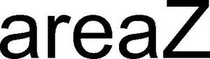

Trade Mark Journal No.2025/038 19 September 2025
WO0000001792913 (9,11,12)
Office of origin: Austria
Date of International Registration:11 January 2024
Date of designation in the UK:
11 January 2024

International priority date claimed: 26 July 2023
(Austria)
- Class 9
- Electronic controllers and regulators for motor vehicle lighting apparatus and for motor vehicle headlights; control devices for headlight adjustment; control apparatus for adjusting the headlight of a motor vehicle; power supply modules for motor vehicle headlights; electronic converters for powering automotive lighting; fiber optics; optical cables; fiber optics and optical cables for motor vehicle headlights; lenses and lens systems for headlights; lenses and lens systems for motor vehicle headlights; control devices for controlling headlights and tail lights; control devices for controlling motor vehicle headlights and motor vehicle tail lights; control devices for automatic control of headlights and tail lights as a function of environmental parameters; control devices for automatic control of motor vehicle headlights and motor vehicle tail lights as a function of environmental parameters; control devices for controlling light sources, in particular LEDs, in headlights; control devices for controlling light sources, in particular LEDs, in motor vehicle headlights; headlight levelers for headlights; headlight levelers for motor vehicle headlights; light signals for motor vehicles, in particular, headlight flashers; actuators for the adjustment of headlights and of components integrated in headlights; actuators for the adjustment of motor vehicle headlights and of components integrated in motor vehicle headlights.
- Class 11
- Lighting apparatus for motor vehicles, namely headlights and lights; headlights; high and low beam headlights; auxiliary headlights; fog and reversing lights; headlight mirrors; headlights, high and low beam headlights, auxiliary headlights, fog and reversing lights and headlight mirrors for motor vehicles; lights for motor vehicles; ceiling lights, wall lights, reading lights, trunk lights, engine compartment lights, glove box lights, direction indicator lights and entrance lights; position lights, marker lights, parking lights, tail lights, brake lights, number plate lights and rear fog lights; decorative lights; ceiling lights, wall lights, reading lights, trunk lights, engine compartment lights, glove box lights, direction indicator lights and entrance lights, all for motor vehicles; position lights, marker lights, parking lights, tail lights, brake lights, number plate lights and rear fog lights, all for motor vehicles; decorative lights for motor vehicles; xenon headlights; LED headlights; laser headlights; bend lighting headlights; xenon headlights for motor vehicles; LED headlights for motor vehicles; laser headlights for motor vehicles; bend lighting headlights for motor vehicles; headlights with controllable light distribution; motor vehicle headlights with controllable light distribution; infrared headlights; infrared motor vehicle headlights; reflectors for motor vehicle headlights; light modules for headlights; light modules for motor vehicle headlights; high and low beam modules for motor vehicle headlights; heat sinks being parts of motor vehicle headlights; all aforementioned goods only in relation to automotive lighting.
- Class 12
- Motor vehicles; electromechanical drives being parts of motor vehicles, namely for the adjustment of headlights and of components integrated in headlights; electromechanical drives being parts of motor vehicles, namely for the adjustment of motor vehicle headlights and of components integrated in motor vehicle headlights.
ZKW Group GmbH
Representative: Patentanwaltskanzlei Matschnig & Forsthuber OG, Biberstraße 22, A-1010 Wien, AUSTRIA